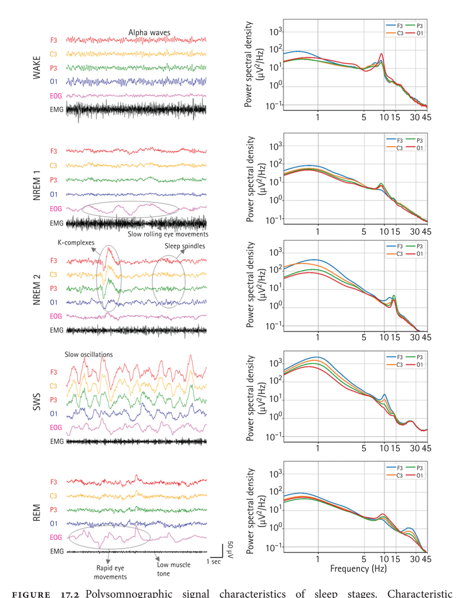

Le sommeil produit un tracé EEG dramatiquement différent de l'éveil. Trois pièges majeurs pour l'interne :
Confondre un ralentissement physiologique de N1-N2 avec une encéphalopathie.
Confondre un vertex sharp, un POST ou une sawtooth avec une activité épileptiforme.
Confondre un K-complex avec une décharge focale.
Pertinence ECT : un patient post-séance somnolent ou en sommeil léger génère légitimement des graphoéléments physiologiques pointus. Ne jamais conclure « anormal » sans préciser l'état de vigilance.
2. Architecture du sommeil
Le trio EEG + EOG + EMG est indispensable pour stadifier
5 stades alternent au cours de la nuit : Éveil → N1 → N2 → N3 → REM, avec des cycles de ~90 min.
Sommeil lent (NREM) = N1 + N2 + N3 — domine la première moitié de la nuit (N3 prépondérant).
Sommeil paradoxal (REM) — domine la deuxième moitié de la nuit, durées croissantes.
Aucun stade n'est identifiable sur l'EEG seul : il faut EOG (mouvements oculaires) + EMG mentonnier (tonus musculaire).
3. Les stades — tracés et spectres
Comparaison visuelle Éveil / N1 / N2 / N3 / REM

Tracés EEG/EOG/EMG et spectres de puissance pour chaque stade. Plus le sommeil s'approfondit, plus les fréquences lentes dominent. Le REM ressemble à un EEG d'éveil bas voltage mais s'accompagne de mouvements oculaires rapides et d'atonie EMG.
Distinction beta abondant : bouffées courtes et fusiformes, contexte N2 confirmé par K-complexes.
Règle d'or : avant de qualifier une activité de « pointue » comme épileptiforme dans un EEG de sommeil, identifier le stade et chercher un variant bénin connu.
6. Implications pour l'ECT
Reconnaître le sommeil pour ne pas alarmer à tort
Péri-ECT
Patient en attente / pré-induction : peut être en N1 (somnolence) avec vertex sharp et theta abondant — ne pas confondre avec encéphalopathie.
Privation de sommeil parfois utilisée pour démasquer un foyer épileptiforme silencieux.
Post-séance
Sommeil léger N1-N2 fréquent — tracé physiologiquement pointu (V-waves, K-complexes) pendant des minutes à dizaines de minutes.
Toujours préciser l'état de vigilance avant de qualifier l'EEG.
Confusion prolongée > 1 h avec tracé pointu hors variants bénins → suspecter état de mal post-critique infraclinique (cf. fiche Status).
Discipline d'interprétation : un EEG de sommeil ne s'interprète jamais sans la polysomnographie minimale (EOG + EMG). Sans ces canaux, beaucoup d'éléments physiologiques deviennent ambigus.